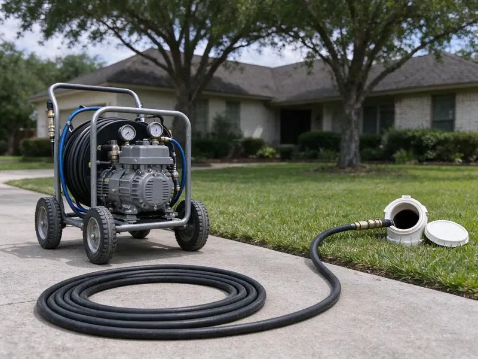

Hydro Jetting in Manteca, CA
Tired of the same clog returning? Our Manteca, CA jetting crew cleans the entire pipe wall, not just a hole through the blockage.
- Prevents Future Blockages
- Camera Inspection Before Jetting
- Prevents Future Clogs
- Pipe-Safe Pressure Settings

Expert Hydro Jetting Services in Manteca, CA.
One complete jetting often replaces years of repeat snaking visits.
Hydro Jetting in Manteca, CA for Grease, Scale and Root Problems
FBL Plumbing always runs a camera before jetting to check pipe material and condition. That way we can set the pressure and choose the nozzle that cleans effectively without harming older cast iron or clay.
Our expertise includes:
- High-pressure water jetting for all pipe sizes
- Cart and trailer jetters for homes and commercial lines
- Preventative maintenance hydro jetting for businesses

Additional Drain Services Services in Manteca, CA
From stubborn kitchen clogs to main sewer backups, our drain services in Manteca, CA clear the line and keep it clear with camera-verified results.


Customers
Why Choose FBL Plumbing for Hydro Jetting in Manteca, CA?
Hydro jetting is a superior method for truly cleaning your pipes, not just poking a hole through a blockage. It is especially useful for older homes in Manteca and for dealing with mineral buildup.
- Root Removal, High-pressure water effectively cuts through and flushes out tree roots that get into sewer lines.
- Prevents Recurrence, By thoroughly cleaning the pipe walls, hydro jetting significantly reduces the chances of blockages forming again quickly.
- Tough Blockages, It effectively breaks apart grease, mineral scale, sludge, and even invasive tree roots that snaking cannot fully dislodge.
Citywide Coverage
No matter where you are in Manteca, CA, you can count on FBL Plumbing for prompt and professional hydro jetting. We are committed to keeping the drains flowing smoothly for all our local customers.
Experienced Team
Each technician at FBL Plumbing has the knowledge and tools to handle different types of blockages and pipe diameters, delivering precise and powerful cleaning. You can count on our expertise for your hydro jetting needs in Manteca, CA.
Safety-First Approach
High-pressure water can injure people if misused, so our techs use protective gear and keep hands clear of the hose and nozzle. We secure access points so water does not spray back into your house.
Trusted Certified Manteca Plumbing Services Professionals
At FBL Plumbing, we take pride in providing certified plumbing services throughout Manteca, CA. Backed by leading industry credentials, our experienced plumbers combine technical skill with genuine customer care. Whether it is repair, installation, or maintenance, we follow strict safety and quality standards to deliver lasting results you can trust.
Call Us Now PHCC Plumbing Contractor Recognition
PHCC Plumbing Contractor Recognition Better Business Bureau (BBB) Accreditation
Better Business Bureau (BBB) Accreditation Angi Certified Pro
Angi Certified Pro ISO 9001 Quality Management Certification
ISO 9001 Quality Management CertificationExpert Hydro Jetting Solutions in Manteca, CA
Hydro Jetting for Hard Water Scale in Manteca
Rural properties around Manteca often rely on private wells, which may need filtration for iron, sediment, or other minerals. Even moderate mineral content can lead to scale buildup in pipes over many years. This scale can restrict flow and trap other debris, leading to clogs. Hydro jetting is highly effective at breaking down and flushing out these hard mineral deposits, restoring the full diameter of your pipes. This is a better method compared to chemical treatments for scale removal.

Residential Sewer Line Jetting in Manteca
Main sewer lines in homes are usually 3 or 4 inches and can collect years of grease, soap, mineral scale and roots. We feed jetting hose through a cleanout and work it toward the street, cleaning in passes. Rear-facing jets pull the nozzle forward while forward jets break up heavy blockages. The water carries debris down to the city main. A camera run afterward shows the pipe walls clean and clear.
Preventative Maintenance Hydro Jetting in Manteca, CA
Proactive hydro jetting can save Manteca, CA property owners from unexpected plumbing emergencies. For homes and businesses with a history of drain issues or those prone to specific types of buildup, scheduled hydro jetting is an smart preventative measure. By regularly removing scale, grease, and other debris before they cause a full blockage, you can extend the life of your pipes, avoid costly repairs, and maintain consistent drainage. We can set up a tailored maintenance schedule for your needs.
Emergency Hydro Jetting in Manteca, CA
A completely backed-up drain or sewer line needs immediate attention. FBL Plumbing offers emergency hydro jetting across Manteca, CA, to address critical blockages quickly. Our technicians are available to respond fast, minimizing water damage and restoring your plumbing as soon as possible. We understand that some clogs just cannot wait.
Preventive Maintenance Jetting in Manteca
If your line has a history of clogs, a maintenance plan can keep it clear. We schedule jetting every 12 to 24 months for homes and more often for busy commercial kitchens. Regular cleaning prevents the buildup from ever reaching the point of a backup. It also gives us a chance to camera the line and spot new problems early. Maintenance customers get priority scheduling.
Sewer Line Descaling with Hydro Jetting in Manteca
Over time, mineral deposits and other materials can build up on the interior walls of sewer lines, forming a tough scale. This reduces pipe diameter and can lead to repeat clogs. Rural properties around Manteca often rely on private wells, which may need treatment for iron, sediment, or other minerals. Hydro jetting is the most effective method for sewer line descaling, using powerful water jets to break down and flush away these mineral deposits, restoring the pipe's full carrying capacity and preventing future buildup.
Hydro Jetting Before Pipe Lining in Manteca, CA
Cured-in-place pipe lining needs a clean surface to adhere and seal correctly. We jet the host pipe to remove roots, scale and debris, then camera it to confirm it is ready. Any heavy obstructions are cut out before the liner is installed. Skipping this step can lead to wrinkles or poor bonding. Proper prep is part of why lined pipe can last for decades.

Kitchen Line Grease Jetting in Manteca, CA
Kitchen drains are the most common grease trouble spot in any home or restaurant. Grease clings to pipe walls and hardens, especially where the line runs flat under a slab. Jetting melts and scrubs this buildup away instead of just poking a hole through it. We use smaller hose and nozzles sized for 1-1/2 and 2 inch kitchen lines. This keeps your sink and dishwasher draining well for much longer.
Expert Hydro Jetting Near Me in Manteca, CA
Being local means we know which neighborhoods have older cast iron or clay pipe and which have newer PVC. That helps us choose safe pressure settings and the right nozzle. It also means faster arrival times when you need help.
When you search for hydro jetting near me in Manteca, CA, FBL Plumbing is your trusted local expert. We are deeply familiar with the plumbing infrastructure and common issues affecting homes and businesses throughout the area. Being close by means faster response times and reliable service when you need it most.
FBL Plumbing at a Glance
- Licensed and insured plumbers serving Manteca, CA
- Same-day appointments and 24/7 emergency response
- Clear written estimates, no hidden fees
- 4.8-star rated by 834+ Northern California customers
Manteca Map
Manteca Information
- Population
- 91,059
- Area codes
- 209/350/559
- Service area
- Manteca and communities within 40 miles
- Nearby
- Tracy, Stockton, Modesto, Ceres
Mineral scale bonds with kitchen grease inside pipes, so hydro jetting is often the only way to restore full flow in older lines in Manteca, CA. Rural properties around Manteca often rely on private wells, which may need treatment for iron, sediment, or other minerals.
Expert Services
Trust our professionals for reliable FBL Plumbing solutions in Manteca, CA.
Our Specialized Plumbing Services in Manteca, CA
At FBL Plumbing, we provide a complete range of plumbing services across Manteca, CA. From leak detection to full system installations, our team ensures fast, precise, and affordable service for both residential and commercial properties. Explore our core services below:


How Our Hydro Jetting Process Works in Manteca, CA
Our hydro jetting process in Manteca, CA is careful and designed for maximum effectiveness and minimal disruption.
Request a Quote
Call (669) 319-2034 to schedule an appointment for your hydro jetting service. Our customer service team will gather initial information about your drain issues and set up a convenient time for a plumber to visit.
Initial Inspection
Before any jetting begins, our technician will perform a camera inspection of your pipes. This lets us precisely diagnose the blockage type and assess the pipe's condition, confirming hydro jetting is the right solution for your Manteca property.
Hydro Jetting
Using professional equipment, we insert a high-pressure hose with a purpose-built nozzle into your drain line. Water jets scour the pipe walls, breaking apart and flushing out grease, roots, scale, and other debris, restoring full flow.
Frequently Asked Questions About Hydro Jetting in Manteca
The cost of hydro jetting in Manteca, CA usually ranges from $300 to $800, depending on the severity of the clog, the length and diameter of the pipe, and ease of access. More complex jobs, like main sewer line descaling or extensive root removal, may be on the higher end. We provide a clear quote after an initial inspection.
The duration of a hydro jetting service in Manteca varies depending on the severity and location of the clog. A typical residential drain might take 1 to 2 hours, while a major sewer line or commercial job could take 3 to 4 hours or more. Our technicians work quickly to minimize disruption.
FBL Plumbing backs our hydro jetting in Manteca, CA. We typically offer a warranty on our workmanship, with the length depending on the service and nature of the clog. We will discuss all warranty details with you before starting any work.
For most modern and well-maintained pipes, hydro jetting is very safe. However, for very old, corroded, or severely damaged pipes, the high pressure could cause further damage. That is why FBL Plumbing always performs a camera inspection first to check your pipe's condition and confirm hydro jetting is appropriate.
Snaking uses a rotating cable to break through a clog. Jetting uses pressurized water to clean the entire pipe wall and flush debris away.
Drain snaking uses a cable with an auger that punches a hole through a blockage to restore some flow. Hydro jetting, however, uses high-pressure water to fully scour the inside of the pipe, removing all buildup and restoring the pipe to a near-new condition. Hydro jetting offers a more thorough and longer-lasting clean.
While small, low-pressure drain jetters are available for rent, professional hydro jetting equipment is far more powerful and requires training to operate safely and effectively. Improper use can damage pipes, cause injury, or fail to clear the blockage. For severe clogs, it is always best to call experienced professionals like FBL Plumbing.
Usually, a permit is not required for standard hydro jetting aimed at clearing blockages in existing lines. However, if the hydro jetting is part of a larger repair or replacement project that alters the plumbing system, a permit from the local building department may be necessary. We will advise you if a permit is needed for your situation.
What People Are Saying About Our Plumbing Experts?

Sofia M.
Two new toilets installed in one visit, no mess left behind, and the tech even adjusted a faucet he noticed was dripping. Fair pricing and really friendly.
Toilet Installation · Modesto, CA
Emily R.
I called FBL Plumbing for plumbing repair, and the technician was fast, polite, and thorough. They explained the problem clearly and fixed it the same day. I will definitely hire them again. Highly recommended!
Plumbing Repair · Manteca, CA
Robert G.
The trenchless sewer replacement saved our front yard. They walked us through the camera inspection footage first so we knew exactly what we were paying for.
Sewer Line Replacement · Ceres, CA
Patricia H.
We had a slab leak that two other companies could not find. FBL Plumbing located it in under an hour, explained our options, and the price matched the quote to the dollar.
Slab Leak Repair · Manteca, CAJames P.
Our commercial plumbing system had a leak under the sink, and FBL Plumbing handled it professionally. The plumbers arrived quickly and restored everything without disruption to our customers.
Commercial Plumbing · Lodi, CA
Mark T.
When our office needed drain cleaning, FBL Plumbing provided quick, reliable service. The plumber arrived on time and made sure every drain flowed perfectly before leaving. Very satisfied.
Drain Cleaning · Tracy, CA